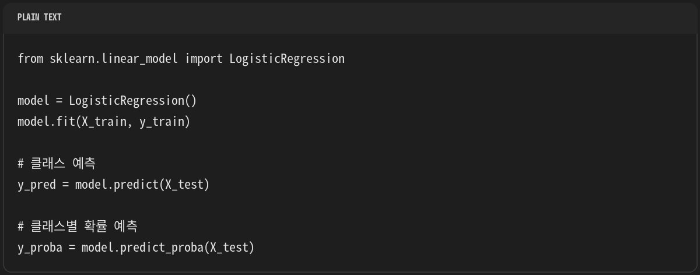
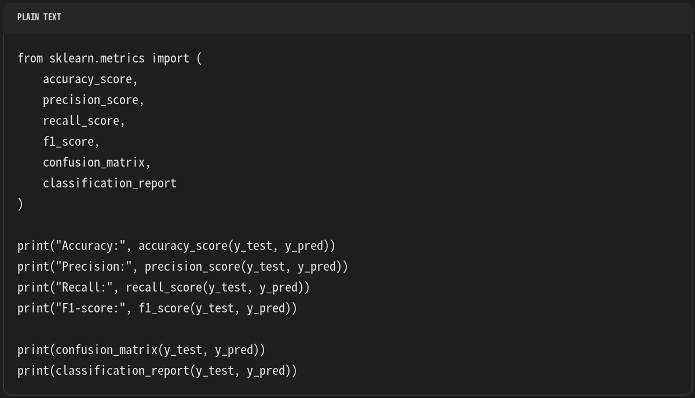
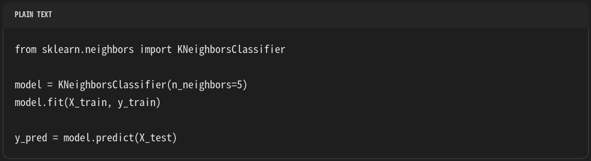
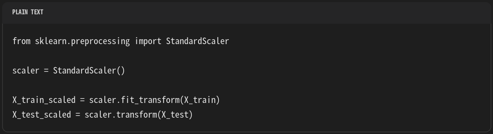
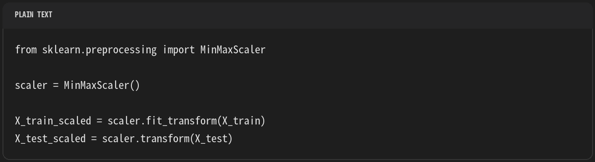
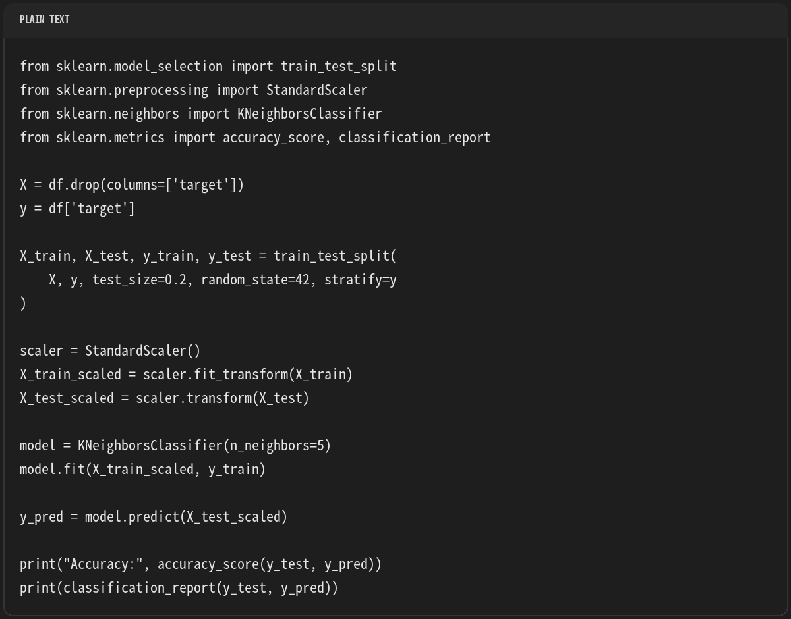

📚 3주차 Python Machine Learning
2026.10.26 Mon ~ 2026.10.30 Fri | Total: 5 days
📕 B. Logistic Regression, KNN (2026.10.27 Tue)
📃 a. Classification (분류 알고리즘)
분류(Classification) 는 데이터를 학습하여 새로운 데이터가 어떤 범주(Class)에 속하는지 예측하는 머신러닝 방법이다.
예시
- 이메일이 스팸인지 아닌지 분류
- 서버 상태가 정상인지 고장인지 분류
- 이미지에 어떤 물체가 있는지 분류
- 고객이 상품을 구매할지 구매하지 않을지 예측
분류의 종류
- 이진 분류(Binary Classification): 두 가지 범주 중 하나를 예측
- 예: 정상 / 고장
- 다중 클래스 분류(Multiclass Classification): 세 가지 이상의 범주 중 하나를 예측
- 예: 자동차 / 사람 / 자전거
- 다중 레이블 분류(Multilabel Classification): 하나의 데이터에 여러 범주를 동시에 부여
- 예: 이미지에 사람과 자동차가 함께 존재
분류와 회귀의 차이
| 구분 | 분류(Classification) | 회귀(Regression) |
|---|---|---|
| 예측 결과 | 범주 또는 클래스 | 연속적인 숫자 |
| 예시 | 고장 여부 예측 | 장비 온도 예측 |
| 대표 알고리즘 | Logistic Regression, KNN Classifier | Linear Regression |
※ 로지스틱 회귀는 이름에 '회귀'가 들어가지만, 일반적으로 분류 문제에 사용한다.
📃 b. Logistic Regression (로지스틱 회귀)
로지스틱 회귀(Logistic Regression) 는 입력 데이터를 바탕으로 특정 클래스에 속할 확률을 계산하고, 이를 이용해 분류하는 알고리즘이다.
예: 서버의 온도와 사용률을 바탕으로 고장 가능성을 예측한다.
핵심 개념
- 입력 특성(Feature): 예측에 사용하는 데이터
- 확률(Probability): 특정 클래스에 속할 가능성
- 임계값(Threshold): 확률을 실제 클래스로 변환하는 기준
로지스틱 회귀는 시그모이드(Sigmoid) 함수를 사용해 결과를 0과 1 사이의 확률로 변환한다.
예를 들어, 고장 확률이 0.8이고 임계값이 0.5라면 고장으로 분류할 수 있다.
기본 코드

PLAIN TEXT 코드
fit(): 학습predict(): 예측 클래스 반환predict_proba(): 각 클래스에 속할 확률 반환
※ 이진 분류에서 일반적인 기본 임계값은 0.5이지만, 실제 적용에서는 문제의 특성에 따라 조정할 수 있다.
📃 c. Evaluation (분류 평가 지표)
분류 모델의 성능을 평가할 때는 실제 정답과 모델의 예측 결과를 비교한다.
혼동 행렬(Confusion Matrix)
| 구분 | 의미 |
|---|---|
| TP (True Positive) | 실제 양성을 양성으로 예측 |
| TN (True Negative) | 실제 음성을 음성으로 예측 |
| FP (False Positive) | 실제 음성을 양성으로 잘못 예측 |
| FN (False Negative) | 실제 양성을 음성으로 잘못 예측 |
예를 들어, 서버 고장 예측에서 실제로 고장 난 서버를 정상이라고 판단하면 FN에 해당한다.
주요 평가 지표
| 지표 | 의미 | 특징 |
|---|---|---|
| Accuracy (정확도) | 전체 예측 중 정답의 비율 | 클래스 불균형이 심하면 오해를 부를 수 있음 |
| Precision (정밀도) | 양성으로 예측한 것 중 실제 양성의 비율 | 거짓 양성(FP)을 줄이는 데 중요 |
| Recall (재현율) | 실제 양성 중 양성으로 찾아낸 비율 | 거짓 음성(FN)을 줄이는 데 중요 |
| F1-score | Precision과 Recall의 조화평균 | 두 지표를 함께 고려 |
| ROC-AUC | 분류 모델이 두 클래스를 구분하는 능력 | 일반적으로 1에 가까울수록 좋음 |
평가 지표 코드

PLAIN TEXT 코드
어떤 지표가 중요할까?
- 고장 탐지처럼 실제 고장을 놓치는 것이 위험하다면 Recall이 중요할 수 있다.
- 정상 데이터를 고장이라고 잘못 판단하는 비용이 크다면 Precision도 중요하다.
- 클래스별 데이터 수가 크게 다르면 Accuracy만으로 모델을 평가하지 않는 것이 좋다.
※ 위 코드는 이진 분류를 기준으로 한다. 다중 클래스 분류에서는 평균 방식(average) 등을 데이터와 목적에 맞게 설정해야 한다.
📃 d. K-Nearest Neighbors (K-최근접 이웃)
KNN(K-Nearest Neighbors) 은 새로운 데이터와 가까운 K개의 학습 데이터를 찾고, 주변 이웃의 정보를 이용해 결과를 예측하는 알고리즘이다.
분류에서는 주변 이웃 중 가장 많이 나타나는 클래스를 예측한다.
예: 새로운 서버의 상태와 비슷한 과거 서버 사례 K개를 찾아 고장 여부를 판단한다.
K의 의미
- K = 1: 가장 가까운 데이터 하나를 기준으로 예측
- K가 작으면: 주변 데이터의 영향을 크게 받으며 노이즈에 민감할 수 있음
- K가 크면: 더 넓은 범위의 데이터를 고려하지만, 너무 크면 서로 다른 클래스가 섞일 수 있음
기본 코드

PLAIN TEXT 코드
n_neighbors=5: 가까운 이웃 5개를 사용fit(): 학습 데이터를 저장하고 예측에 필요한 정보를 준비predict(): 주변 이웃을 바탕으로 클래스 예측
특징
- 이해하기 쉽고 구현이 간단하다.
- 예측 시 주변 데이터를 찾아야 하므로 데이터가 많으면 느려질 수 있다.
- 거리 기반 알고리즘이므로 특성 스케일링이 중요하다.
📃 e. Feature Scaling (표준화, 정규화)
Feature Scaling(특성 스케일링) 은 서로 다른 단위나 범위를 가진 특성들의 값을 일정한 기준으로 변환하는 과정이다.
예를 들어, 나이는 20~80이고 연봉은 2,000만~1억 원이라면 연봉의 숫자 범위가 훨씬 크다. 거리 기반 알고리즘에서는 큰 범위의 특성이 거리에 더 큰 영향을 줄 수 있다.
1. 표준화(Standardization)
데이터의 평균을 0, 표준편차를 1로 변환한다.
z = (x - 평균) / 표준편차

PLAIN TEXT 코드
2. 정규화(Normalization, Min-Max Scaling)
일반적으로 데이터를 지정된 범위, 예를 들어 0~1로 변환하는 것을 의미한다.
x_scaled = (x - 최솟값) / (최댓값 - 최솟값)

PLAIN TEXT 코드
표준화와 정규화의 차이
| 구분 | 표준화 | Min-Max 정규화 |
|---|---|---|
| 대표 도구 | StandardScaler | MinMaxScaler |
| 결과 | 평균 0, 표준편차 1 | 지정한 범위, 보통 0~1 |
| 특징 | 값이 반드시 0~1에 들어가지는 않음 | 이상치에 영향을 많이 받을 수 있음 |
주의사항
- 반드시 학습 데이터에
fit_transform()을 적용한다. - 테스트 데이터에는 학습 데이터에서 얻은 기준으로
transform()만 적용한다. - 테스트 데이터까지 포함해 스케일러를 학습하면 데이터 누수(Data Leakage)가 발생할 수 있다.
- KNN처럼 거리 기반인 알고리즘에서는 스케일링이 특히 중요하다.
📃 f. Project (프로젝트)
분류 프로젝트에서는 데이터를 준비하고 분류 모델을 학습한 다음, 적절한 평가 지표로 결과를 확인한다.
기본 진행 순서
- 데이터 불러오기 및 구조 확인
- 결측치와 이상치 처리
- 입력 특성
X와 타깃y분리 - 학습 데이터와 테스트 데이터 분리
- 필요한 경우 특성 스케일링
- Logistic Regression 또는 KNN 모델 학습
- 예측 결과 확인
- 혼동 행렬과 평가 지표로 성능 평가
- 모델별 결과 비교 및 개선
핵심 코드 예시: 스케일링과 KNN

PLAIN TEXT 코드
※ target은 예시 타깃 컬럼명이다. 실제 데이터에 맞게 변경해야 한다. stratify=y는 분류 클래스의 비율을 학습·테스트 데이터에 가능한 한 비슷하게 유지하기 위한 설정이다.
✅ 핵심 요약
- 분류는 데이터를 특정 범주로 나누는 문제다.
- 로지스틱 회귀는 확률을 계산해 클래스를 예측한다.
- Accuracy, Precision, Recall, F1-score는 대표적인 분류 평가 지표다.
- KNN은 가까운 K개의 이웃을 이용해 클래스를 예측한다.
- Feature Scaling은 특성의 범위와 단위를 조정한다.
- KNN은 거리의 영향을 받기 때문에 스케일링이 중요하다.
- 스케일러는 학습 데이터로만 학습하고, 테스트 데이터에는 같은 기준을 적용한다.
🎯 학습 목표: 로지스틱 회귀와 KNN으로 분류 모델을 만들고, 분류 평가 지표와 특성 스케일링을 활용해 모델 성능을 비교할 수 있다.